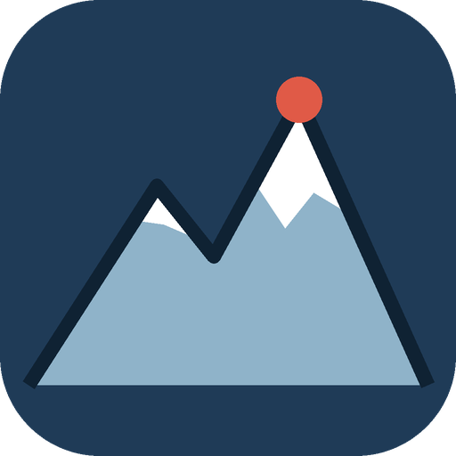

Slovenski 2000-čaki
Vleci = obrni se / poglej gor-dol · kolešček ali +/− = približaj · presledek = vrti · klik na ime = skoči na vrh
−
⟳ Vrti
☀ Dan
✕ Izhod
+
‹
◧ Karta in sloji
‹
▲ Seznam vrhov
Moji vrhovi
×
2000+ m
1500–2000 m
Vsi
98 prominentnih
Vsi vrhovi
Vsi
Neobiskani
Obiskani
Izvozi
Uvozi
shranjeno v brskalniku
×
Dvatisočaki
Podlaga
Relief (barvna višina)
Satelit (Esri)
OpenTopoMap
Snežna karta (sneg + izohipse)
Sloji
Senčenje reliefa
Waymarked Trails (slika)
Vrhovi (
)
Imena vrhov
Vrhovi 1500–2000 m (
)
Državna meja
Vode (reke, potoki, jezera, slapovi)
Kraji (mesta, vasi)
Izohipse (plastnice)
Višina snega (model, dnevno)
◀
▶
Model ICON-D2 (DWD, mreža ~2 km) prek Open-Meteo. Ocena, ne meritev; ostri grebeni so zglajeni.
Poti in koče (OSM)
Poti (markirane + neoznačene)
Koče, bivaki, izviri
Spletne kamere
Parkirišča / izhodišča
Ferate (oznake + težavnost)
Riši pot
Velikost besedila
karta + meniji
1.0×
Pretiravanje višin
1.0 = realno
1.0×
Klik na teren
Klikni kamorkoli za višino DEM.
Napredno
Osveži podatke OSM
Naloži ceste
Razširi na 20 km (PC)
Izvozi paket podatkov
Varčni način (starejše naprave)
Izklopi senčenje, Waymarked sloj, ostrino 360° (samo Nizka), oddaljene ploščice in meglo; poti šele ob približanju.
Hitri teren (test)
Hitrejše nalaganje in manj zatikanja: 3D oblika iz grobejših podatkov, slika in senčenje ostaneta ostra. Primerjaj vklop/izklop na istem mestu.
◧
Karta
▲
Vrhovi
✎
Riši
Naprava je videti počasna. Vklopim varčni način?
Vklopi
Ne
❄
Višina snega
ⓘ
–